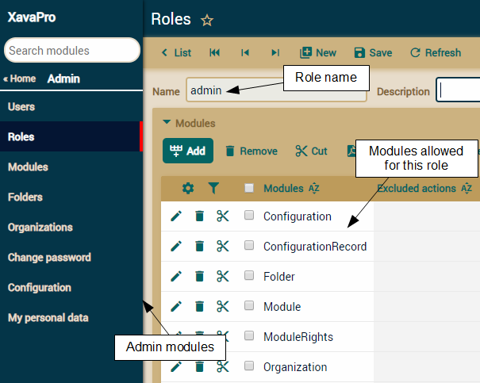
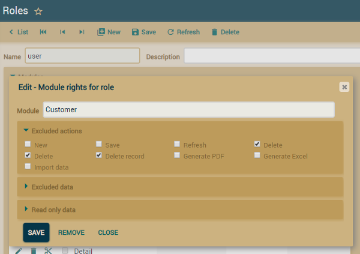
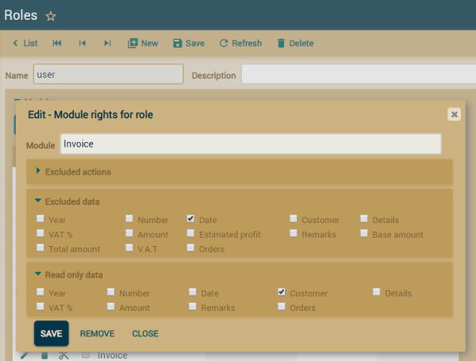
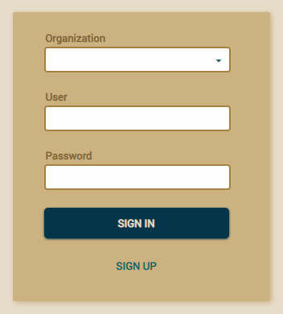
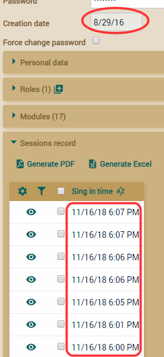
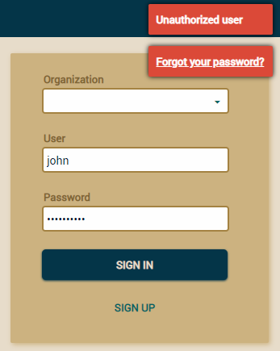
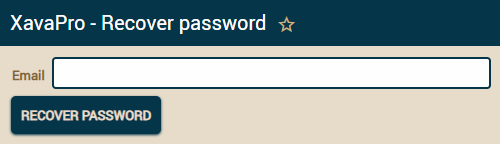

Table of Contents
Security and user management
All the features in this article are available only in XavaProUser management
XavaPro adds the modules Roles, Modules and Users to your application, in a folder called Admin. These modules allows you to configure the access levels for different user types.
Usually, you create a new role and assign some modules to it. Then, go to the Users module, choose a user and assign the new role to him. By default, there are two roles already created: admin with access to Users, Roles, Modules and Folders , and user with access to all the modules of your application.
If you remove access to the default module of an entity, modifying and creating references to that entity is not allowed. For example, if the users of a particular role cannot access the Customer module, they cannot create or modify customers from the Invoice module either (new in v5.3).
The above user management system is only available in XavaPro, with plain OpenXava you have to add users in the naviox-users.properties file inside properties folder of your project.
Restricting user access to actions
If you want to restrict users of certain roles from executing certain actions, go to the Roles module and choose that role to edit in detail mode. Then click in the module where you want to restrict those actions, and a dialog like the next one will appear:
Select the actions you want to exclude and click on Save. From now on, all the users of that role will not be able to execute those actions in that module.
Restricting access to New and Save restricts access for creating and modifying from references also, if you do it for the default module of that entity. For example, if you restrict access to Save action in Customer module, the user will not be able to modify Customer data from Invoice module (new in v5.3).
Restricting user access to actions is only available in XavaPro.
Restricting user access to properties, references and collections (new in v5.5)
If you want to restrict users of certain roles from accessing certain properties, references or collections, go to the Roles module and choose that role to edit in detail mode. Then click in the module where you want to restrict those members, and a dialog like the next one will appear:
Select the members you want to exclude in Excluded data and click on Save. From now on, all the users of that role will not be able to access those members in that module. Note you also have Read only data to allow the users to see the data but not to change it.
Restricting user access to properties, references or collections is only available in XavaPro.
User and password policies
There are a lot of options available for user management and password policies. In the Admin folder you'll find a Configuration module:
You can configure these policies in order for your system to be PCI-DSS compliant, which is required for any applications which handles credit card data!
These policies for users and passwords are only available in XavaPro.
LDAP
XavaPro allows the users to be authenticated via LDAP. To configure LDAP edit the naviox.properties file and add the next entries:# LDAP Config ldapHost=192.168.0.0 ldapDomain=XX ldapDN=DC=XX,DC=XX,DC=XX ldapPort=389If you use OpenLDAP omit the ldapDomain entry (since v5.9.1), like in this example:
# Example of OpenLDAP Config ldapHost=192.168.2.xxx ldapDomain= ldapDN=ou=people,dc=dgrtdf,dc=gov,dc=ar ldapPort=389Note as ldapDomain has no value.
By default all the users are authenticated using XavaPro stored passwords. To enable LDAP you have to select the users and check Authenticate with LDAP option:

LDAP support is only available in XavaPro.
Guest can create a user account himself
In the sign in box you have a link labeled as SIGN UP:
The user can click on it to go to a form to registering:

After submitting this form the user is created and signed in. There is a self sign up role to determine the rights for the autocreated users.
You can disable this feature with the configuration module.
Since v6.0 you can show a privacy policy in the sign up page, the privacy policy text is get from privacy_policy entry in the messages i18n files. It's required that the user check the checkbox to accept the policy to do the sign up. The date of the policy acceptance is stored with the user data. You can hide the privacy policy on sign up using the configuration module.
Creation date and record of logins for each user
Just go to the users module to see that data:
Password recovery (new in v5.7)
The user can recover his password by himself. When he fails to put the correct password a "Forgot your password?" message with a link is shown:
When the user clicks on the link goes to a page to enter his email:

After clicking on the "Recover password" button an email with instructions to recover the password is sent. Of course, a user with that email has to be registered in the system.
To use the recover password feature you have to configure the email properties in xava.properties, something like this:
#SMTP related information smtpHost=smtp.gmail.com smtpPort=587 smtpUserId=myemail@gmail.com smtpUserPassword=mypassword smtpHostTrusted=true smtpStartTLSEnable=true
User is asked to enter his email (new in v5.7)
In order the recovering password mechanism works it's needed that each user has his email registered in the system. So now if the user has no email XavaPro asks for it after sign in:
Entering the email is not required, the user can go to any other module and leaves the email blank if he wishes.
This new "My personal data" module is always available for all users to edit their own personal data.
Email as user name (new in v6.0)
In the Configuration module there is an option called Use email as user name. If you check it it's required that when a new user sign up uses an email as user name. Moreover, the already created users can sign in using their emails instead of user names.The validation of the email on sign up can be customizing with the emailValidatorForSignUpClass in naviox.properties, for example:
emailValidatorForSignUpClass=com.mycompany.myapp.MyEmailValidatorIn this case the validation logic of MyEmailValidator (must implement IPropertyValidator) is applied on sign up for the email. The default validation for email just verifies that email has the correct syntax, but sometimes you want to have different validation, such as the email would be a company email, for example. You can do that validation in your custom email validator.